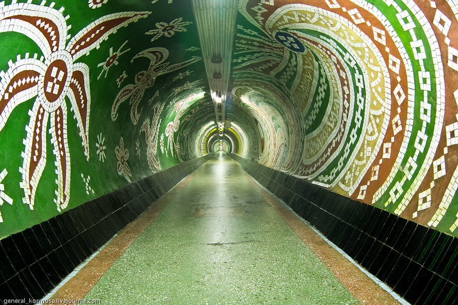
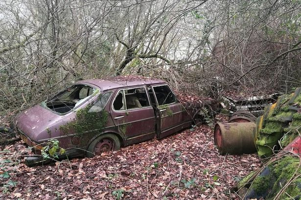

Small learning project with cool photos of abandoned places.
Cheer up!Stuff i want to learn from doing theese projects
-
Creating web-site development
Stuff like this seems pretty needed theese days so im interested to give it a try and dig in deep!
-
Develop JS skills
JS seem'd like a lot of new stuff to discover so i decided to do couple of projects by myself from courses that i've already passed to root the knowledge deeper and practice more.
-
Develop self-discipline
Self-discipline has always been a prolem for me , so this is the time i decided to end the times of slacking off and start improving.
-
Entertain myself
Once you get to know how to do this and that, this becomes fun. Like solving some interesting puzzle or getting out of a tough situation in an RTS game.
Photos preview
-

Abandoned tunnel to the beach
This tunnel used to lead the way from the sanatorium to the beach.
-
Odessa abandoned building
One of many abandoned buildings in the middle of Odessa city.
-

Abandoned car
An abandoned vehicle that was dropped by in the forest but never saw the return of the owners.
-
Sunken ship
Sunken ship that was beached and abanoned that rotted away for many years.
-
Join the challenge to iprove yourself.
-
Create someting yourself. Become stronger than you were